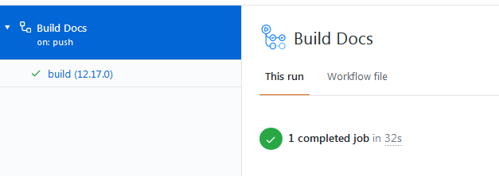

Converting the Wiki to Antora
Getting Started
Setup is based off Using Node.js with GitHub Actions, Caching dependencies to speed up workflows, and the Install Antora guides. It is expected that the repository has already been cloned locally.
-
GitHub Web Interface (GWI)
-
Git Command Line Interface (CLI)
-
Continuous Integration (CI)
-
A gitHub account.
-
The Atom Editor, setup for using AsciiDoctor.
-
Git (CLI).
Activating Dispatch Event
We use a dispatch_event to build the wiki anytime there are new changes tagged on the wiki-ui repository.
To activate the Docs Dispatch Event command, it must share a personal access token, with permissions public_repo, with the jMonkeyEngine Wiki.
You setup the token first from your personal account with the token name WIKI_UI_DISPATCH.
Then in the wiki-ui repository under add the new token with the format:
username:tokenSetup of Node.js
GitHub Actions requires a workflow file (main.yml) to be located in a .github/workflows folder. In order to use (CI) with the workflow, there must be a package.json and package-lock.json file located in the root of the repository. Node.js will build and update these files for us.
-
We use an action named “EndBug/add-and-commit@v4” to commit the
package.jsonandpackage-lock.jsonfiles to the repository any time there are changes that affect these files. -
We use an action named “peaceiris/actions-gh-pages@v3” to publish the built website to the
gh-pagesbranch whenever there is a push to the repo. -
We use a
repository_dispatchwebhook event configured to recieve events from the wiki-ui repo to build the docs whenever there is a new release pushed to the UI repository.
These steps are all built into the workflow file.
|
You can edit/add the main.yml from a git (CLI) or the (GWI) only. This tutorial uses (CLI) for workflow file edits, and the Atom Editor for editing all other files. Since both the (CLI) and Atom Editor are working with the same repository, both will stay synchronized with the local repository. |
Prepare Repository
-
From the (CLI):
-
Checkout a new branch named
antora-setup. -
Create the destination folder
docs/modules/ROOTin the root of the local repository. -
Move the folders found inside the Wiki
src/docs/folder to the destination folder.This will be the destination final results.
|-docs |-modules |-ROOT |-images |-pages |-resourcesUse
git mvfrom the (CLI) to retain all history.git mv [-v] [-n] <source> <destination>
* [-n] option will do nothing; only show what would happen. Remove when ready to complete the move.
<source>
<destination>
src/docs/imagesdocs/modules/ROOT/imagessrc/docs/resourcesdocs/modules/ROOT/resourcessrc/docs/asciidocsdocs/modules/ROOT/pagesThe move to the docs/modules/ROOT/pagesfolder is a rename of theasciidocfolder. Do not move the folder into pages. -
Add, commit and push the
antora-setupbranch to the repository.
-
Setup Workflow
All files for setup can be found inside the transition-docs module where this document is located. These are the final configuration files using the master branch to trigger builds and assume all steps have been completed and Antora is now in control of the build process for the wiki.
Using the workflow shown below will execute on the antora-setup branch pushing the build to the gh-pages branch allowing setup to be completed. This will allow for testing the build prior to merging the branch to master.
The changes that affect the workflow branch are as follows:
on:
push:
branches: [ antora-setup ]
uses: actions/checkout@v2
with:
ref: antora-setup| It’s a good idea to have the (GWI) actions tab open in a browser so the build can be monitored. |
The action EndBug/add-and-commit@v4 will commit to the branch that triggered the workflow.
-
From the (CLI):
-
Create a
.github/workflowsfolder in theantora-setupbranch. -
Add the initial “main.yml” file below as a new workflow.
The initial file is designed to be used in steps, commenting and uncommenting commands as the changeover progresses. The finalized main.yml is in the transition-docsmodule.Initial main.yml# This file can be used to configure the Node.js build for Antora ci without # having Node installed locally. See 'transition-docs/antora_setup.adoc' in the root # of this repo for details of how to use this file. # # The action add-and-commit will always commit the package-lock.json, # package.json and Antora cache only if changes are made to the files. # # If the package-lock.json or package.json files are updated or new depends are # installed, the 'npm ci' should be always ran thereafter to speed up build # times. When ci is active, the package-lock.json and package.json files in root # will not be updated. # # Uses the action actions-gh-page to publish pages to the gh-pages branch, # including a required .nojekyll file that Antora requires for configuration. # # The 'actions/cache@v2' creates a new cache when the packages in # package-lock.json file change, or when the workflow runner's operating system # changes. name: Build Docs on: push: branches: [ antora-setup ] # Initiate a build to pull in the wiki-ui repository changes. repository_dispatch: types: [wiki-ui-build] pull_request: jobs: build: #Static version is used to maintain stability. runs-on: ubuntu-18.04 strategy: matrix: #Static version is used to maintain stability. node-version: [12.17.0] steps: - name: Clone the repo uses: actions/checkout@v2 with: ref: antora-setup # Number of commits to fetch. 0 indicates all history. fetch-depth: 1 - name: Use Node.js ${{ matrix.node-version }} uses: actions/setup-node@v1 with: node-version: ${{ matrix.node-version }} # Display the sha of the build triggering the repository_dispatch event. - name: wiki-ui-build if: github.event.action == 'wiki-ui-build' run: echo wiki-ui-build sha ${{ github.event.client_payload.sha }} # Uncomment to write the default package.json file to the repo root. # When used in conjunction with the action add-and-commit 'add' command, the # file will be written to the repo for editing. - name: Install default package.json run: npm init --yes # Uncomment when adding or updating dependencies in the package-lock.json # and package.json files for ci. - name: Install Node run: npm i # Uncomment during initial setup or when updating Antora to a new version. # The action add-and-commit 'add' command will detect the changes and commit # the package-lock.json and package.json files. # Emoji support. Seems to be a direct implementation of AsciiDoctor ruby # extension. # see: https://github.com/mogztter/asciidoctor-emoji - name: Install Antora run: | npm i @antora/cli@2.3 npm i @antora/site-generator-default@2.3 npm i asciidoctor-emoji # Uncomment after package-lock.json and package.json files are updated. # - name: Run with CI # run: npm ci - name: Audit Depends run: npm audit # - name: Build Docs # run: npm run buildDocs # Detects any updates to package-lock.json and package.json and commits the # files to root. # see: # https://github.com/marketplace/actions/add-commit?version=v4.1.0 # for use options. - name: Commit Packages uses: EndBug/add-and-commit@v4 with: author_name: mitm001 author_email: mitm001@users.noreply.github.com message: "Commit files for CI workflow" # Commits these files to root if and only if there are changes. add: "package-lock.json package.json" env: GITHUB_TOKEN: ${{ secrets.GITHUB_TOKEN }} # Commit changes to the gh-pages branch. Antora requires an empty # '.nojekyll' be present in the branch due to certain directories starting # with an underscore. This action has an option, set by default, to add that # file for us on commit. # see: # https://github.com/marketplace/actions/github-pages-action?version=v3.6.1 # for use options. # - name: Deploy Docs # uses: peaceiris/actions-gh-pages@v3 # with: # github_token: ${{ secrets.GITHUB_TOKEN }} # Commits these files to gh-pages if and only if there are changes. # publish_dir: ./build/site # Insert CNAME for repository. # cname: wiki.jmonkeyengine.orgThe initial main points of interest are as follows.
repository_dispatch: types: [wiki-ui-build]When the webhook event
repository_dispatchis triggered, with a secretWIKI_UI_DISPATCHtoken that matches the same secret token of this repository and with theevent_type“wiki-ui-build”, the workflow build will run.See:
#Static version is used to maintain stability. runs-on: ubuntu-18.04 strategy: matrix: #Static version is used to maintain stability. node-version: [12.17.0]With the above lines, we are using a static version of
UnbuntuandNode.js. Updates can potentially break things, and we would find out after the fact rather than knowing immediately that there was a problem.Setting the node version using the matrix strategy has the added benefit of appending the Node.js version to our job
buildon the (GWI) dashboard.For example, our job name
build, will have the version12.17.0appended like so:- name: Install default package.json run: npm init --yesThe above line will create our default
package.jsonfile that will control the (CI) and hold any command line scripts we implement. Once this file is commited to the repo, this line is no longer used.- name: Install Node run: npm iThis will install node into our workflow and create our initial
package-lock.jsonfile. Once thepackage-lock.jsonfile is committed, this line will only be used to when adding new packages by appending the package name to the command. Change it torun: npm updateto update depends.- name: Install Antora run: | npm i @antora/cli@2.3 npm i @antora/site-generator-default@2.3 npm i asciidoctor-emojiThe above command will install our Antora depends.
with: author_name: mitm001 author_email: mitm001@users.noreply.github.com message: "Commit files for CI workflow"The above is the author and message of the commit action. If the author name and email are not set, a warning will be thrown if
repository_dispatchtriggers a workflow. Customize as needed.# Commits these files to root if and only if there are changes. add: "package-lock.json package.json*"This line will commit the
package-lock.jsonandpackage.jsonif there are any changes to the files.env: GITHUB_TOKEN: ${{ secrets.GITHUB_TOKEN }}The
secrets.GITHUB_TOKENdoesn’t have authorization to create any successive events, so we avoid an infinite loop of commit, run workflows, commit, run workflows. -
Add, commit and push the
antora-setupbranch to the repo. The workflow will commit thepackage.jsonandpackage-lock.jsonfiles into the root of theantora-setupbranch of the repo.
-
-
Issue a pull request. This will pull in the
.jsonfiles. -
Edit the
main.ymlfile by commenting out the “Install default package.json”, “Install Node” and “Install Antora” commands.# - name: Install default package.json # run: npm init --yes # - name: Install Node # run: npm i # - name: Install Antora # run: | # npm i @antora/cli@2.3 # npm i @antora/site-generator-default@2.3 # npm i asciidoctor-emoji-
Add, commit and push the
antora-setupbranch to the repo.
-
-
In the Atom Editor:
-
Edit the
package.jsonfile.package.json{ "version": "1.0.1", "description": "jMonkeyEngine Documentation", "scripts": { "buildDocs": "$(npm bin)/antora --stacktrace wiki-playbook.yml" }, "private": true, "license": "BSD-3-Clause", }See: The Package Json Guide, and The package-lock.json file for info on the properties that can be set and their meaning. -
Bump
"version": "1.0.1". -
Fix the description.
-
Remove
testfrom the scripts property. -
Add the
buildDocsscript. -
Add the
"private": true,property. -
Change the license.
-
-
Edit the
package-lock.jsonfile:-
Bump
"version": "1.0.1".
-
-
Stage, commit and push the
package.jsonandpackage-lock.jsonfiles to the repo.
-
Preparing Test Site
We only need this step for a repository imported from the wiki, skip otherwise.
-
From the (GWI).
-
Switch to the
gh-pagesbranch and delete theCNAMEfile. -
Commit the changes.
-
In the
Settingstab, set the newly created branch as the “Source” under the GitHub Pages settings. The link box for the site will change color to green, indicating it is configured.This will be the branch we deploy the site to using the “Deploy Docs” command in the
main.ymlfile.
-
Setup Antora
Add the configuration files. Once complete, our final source structure will look like so.
|-docs
| |-modules
| | |-ROOT
| | |-nav.adoc
| | |-images
| | |-pages
| | |-resources
| |-antora.yml
|-wiki-playbook.yml-
From the Atom Editor:
-
Add the initial
wiki-playbook.ymlfile to the root of the repo.Initial wiki-playbook.ymlsite: title: jMonkeyEngine Docs url: https://wiki.jmonkeyengine.org robots: disallow start_page: docs::documentation.adoc content: sources: - url: . branches: [antora-setup] start_path: docs - url: https://github.com/jMonkeyEngine/wiki-ui branches: HEAD start_path: docs ui: bundle: url: https://github.com/jMonkeyEngine/wiki-ui/releases/latest/download/ui-bundle.zip # Required when using cache or fetch will not update ui. snapshot: true asciidoc: # Some built-in AsciiDoc attributes are not applicable in the Antora # environment. These attributes include data-uri, allow-uri-read, docinfo, # linkcss, noheader, nofooter, webfonts, and outfilesuffix. attributes: # previous and next page navigation, uses nav.adoc page-pagination: '' idprefix: '' idseparator: '-' #add an <orgname> element orgname: 'jMonkeyEngine' # Site wide setting of javaDoc url. Soft set using '@' allows override at # component and page level. link-javadoc: 'https://javadoc.jmonkeyengine.org/v3.3.2-stable@' # Enables the UI macros (button, menu and kbd) experimental: '' # Adds an anchor in front of the section title when the mouse cursor hovers # over it. :sectanchors: '' extensions: # Twitter Emoji # see: https://github.com/Mogztter/asciidoctor-emoji - asciidoctor-emoji runtime: cache_dir: ./.cache/antora fetch: trueSee: Set Up a Playbook for detailed key: valueexplanations.The branches key is set to antora-setup. The wiki-playbook.yml in thetransition-docs `module is set to use the `masterbranch for versioning. -
Add the antora.yml file to the
docsfolder. It must be located next to themodulesfolder.antora.ymlname: docs title: Docs version: master start_page: ROOT:jme3.adoc nav: - modules/ROOT/nav.adoc -
Add the
nav.adocfile to thedocs/modules/ROOTfolder. It must be in the top-level of theROOTfolder.nav.adoc* <<documentation#,Getting Started>> * {link-javadoc}[JavaDoc] * <<jme3#,jMonkeyEngine 3>> ** Beginner Tutorials *** <<jme3/beginner/hello_simpleapplication#,Hello SimpleApplication>> *** <<jme3/beginner/hello_node#,Hello Node>> *** <<jme3/beginner/hello_asset#,Hello Asset>> *** <<jme3/beginner/hello_main_event_loop#,Hello Main Event Loop>> *** <<jme3/beginner/hello_input_system#,Hello Input System>> *** <<jme3/beginner/hello_material#,Hello Material>> *** <<jme3/beginner/hello_animation#,Hello Animation>> *** <<jme3/beginner/hello_picking#,Hello Picking>> *** <<jme3/beginner/hello_collision#,Hello Collision>> *** <<jme3/beginner/hello_terrain#,Hello Terrain>> *** <<jme3/beginner/hello_audio#,Hello Audio>> *** <<jme3/beginner/hello_effects#,Hello Effects>> *** <<jme3/beginner/hello_physics#,Hello Physics>> ** Intermediate Tutorials *** Concepts **** <<jme3/intermediate/best_practices#,Best Practices>> **** <<jme3/intermediate/simpleapplication#,Simple Application>> **** <<jme3/features#,Features>> **** <<jme3/intermediate/optimization#,Optimization>> **** <<jme3/faq#,FAQ>> *** Math Concepts **** <<jme3/math_for_dummies#,Math For Dummies>> **** <<jme3/intermediate/math#,Math>> **** <<jme3/math#,More Math>> **** <<jme3/rotate#,Rotate>> **** <<jme3/math_video_tutorials#,Math Video Tutorials>> *** 3D Graphics Concepts **** <<jme3/intermediate/multi-media_asset_pipeline#,Multi-Media Asset Pipeline>> **** <<jme3/scenegraph_for_dummies#,Scenegraph for Dummies>> **** <<jme3/beginner/hellovector#,Hello Vector>> **** <<jme3/terminology#,Terminology>> **** <<jme3/intermediate/how_to_use_materials#,How to Use Materials>> **** <<jme3/intermediate/transparency_sorting#,Transparency and Sorting>> **** <<jme3/external/blender#,Importing from Blender>> **** <<jme3/external/3dsmax#,Importing from 3DS Max>> * <<logo#,Logo Usage>> * <<bsd_license#,License>> * <<github_tips#,Github Tips>> .SDK * <<sdk#,jMonkeyEngine SDK>> -
Stage, commit and push everything to the repo.
-
-
From the (CLI):
-
Edit the main.yml file, uncommenting the
Run with CI,Build Docs,Deploy Docscommands. If this is for the official wiki site, uncomment thecnamekey as well.- name: Run with CI run: npm ci - name: Build Docs run: npm run buildDocs - name: Deploy Docs uses: peaceiris/actions-gh-pages@v3 with: github_token: ${{ secrets.GITHUB_TOKEN }} # Commits these files to gh-pages if and only if there are changes. publish_dir: ./build/site # Insert CNAME for repository. cname: wiki.jmonkeyengine.org -
Add, commit and push the
antora-setupbranch to the repo.
-
The build will succeed but if we examine the log file we find that the emoji.adoc page is broken. This is due to format changes using the new emoji macro.
-
Issue a pull request from the Atom Editor.
-
To save time, replace the
docs/modules/ROOT/pages/wiki/emoji.adocfile with theemoji.adocfile found insidetransition-docsmodule.
We are now down to one last set of warnings that need attention. When we examine the build log we see:
WARNING: skipping reference to missing attribute: home
WARNING: skipping reference to missing attribute: appname
WARNING: skipping reference to missing attribute: home
WARNING: skipping reference to missing attribute: appname
WARNING: skipping reference to missing attribute: 0
WARNING: skipping reference to missing attribute: 1
WARNING: skipping reference to missing attribute: 2The home and appname missing attributes are due to unescaped content in the docs/modules/ROOT/pages/sdk/update_center.adoc file. This folder will be removed in the future but to stop the errors for now, fix the offending content.
-
Escape one of the brackets in each string
${HOME}and${APPNAME}."`$pass:[{]HOME}/.$pass:[{]APPNAME}/version`" "`$pass:[{]HOME}/.$pass:[{]APPNAME}/nightly`" -
The second set of warning comes from the
docs/modules/ROOT/pages/jme3/advanced/logging.adocfile. To fix this, look for and escape the string{0},{1},{2}.`++{0},{1},{2}++` -
Stage, commit and push everything to the repo after editing.
Cleanup
Delete the following from the antora-setup branch:
-
.editorconfig
-
.gitignore
-
.travis.yml
-
build.gradle
-
deploy_ghpages.sh
-
gradlew
-
gradle.bat
-
src directory (slim templates)
-
lib directory
-
gradle/wrapper
-
Add the new README.adoc file from the
transition-docsmodule to the root of the repository. -
Stage, commit and push everything to the repo after editing.
-
Merge to Master
Once testing reveals everything is correctly setup, change the following settings to prepare for the final step of merging the antora-setup branch into master.
-
Change the following settings:
-
Set the
branches:valueantora-setuptomastermain.ymlon: push: branches: '*'and remove the
ref: antora-setupfrom theClone the repocommand.steps: - name: Clone the repo uses: actions/checkout@v2 with: # Number of commits to fetch. 0 indicates all history. fetch-depth: 1 -
Set the
branches: [antora-setup]value in thewiki-playbook.ymlto point to HEAD.content: sources: - url: . branches: HEAD
-
-
Add, commit and push the
antora-setupbranch to the repository. -
Checkout the master branch, merge the
antora-setupbranch tomasterand push to the repository.git checkout master git merge antora-setup git push origin master -
Delete the
antora-setupsetup branch.git push -d origin antora-setup
Post Rename Cache Commit
After the branch rename, change the workflow file EndBug/add-and-commit@v4 “add” command to commit the cache upon changes.
# Commits these files to root if and only if there are changes.
add: "package-lock.json package.json ./.cache/antora/*"After add, commit and pushing the workflow file, the cache will be committed to the repository master branch.